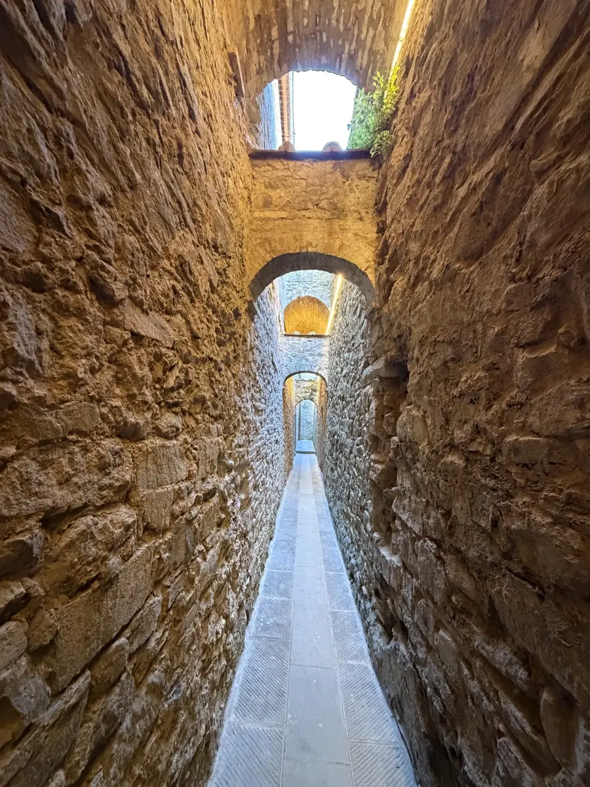
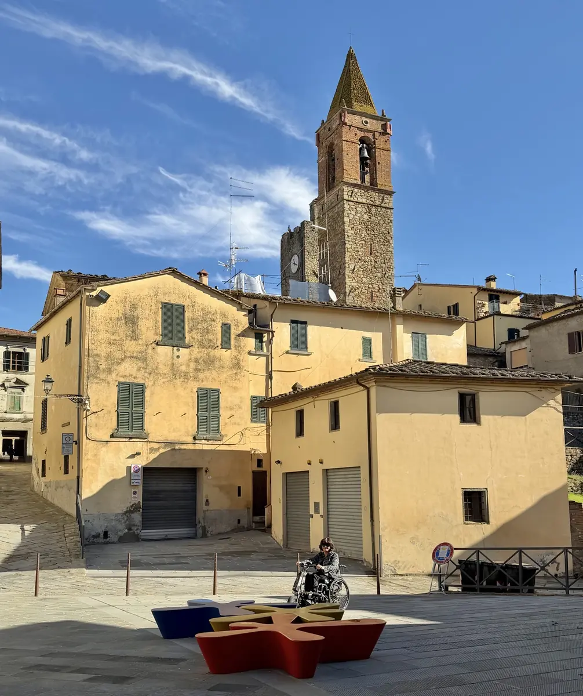
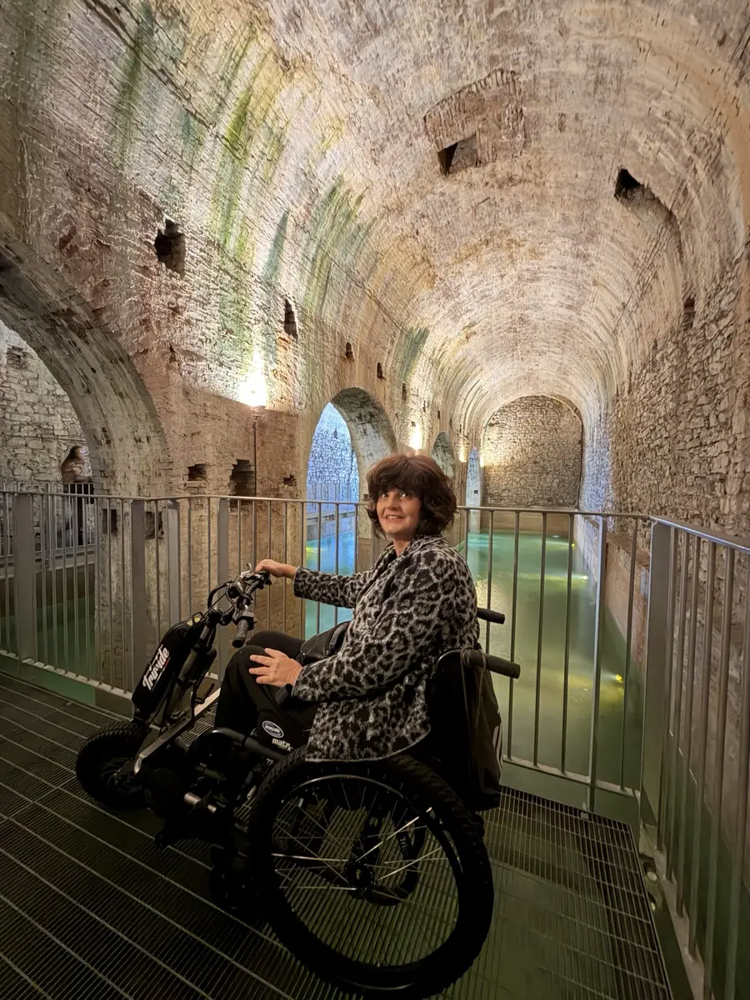
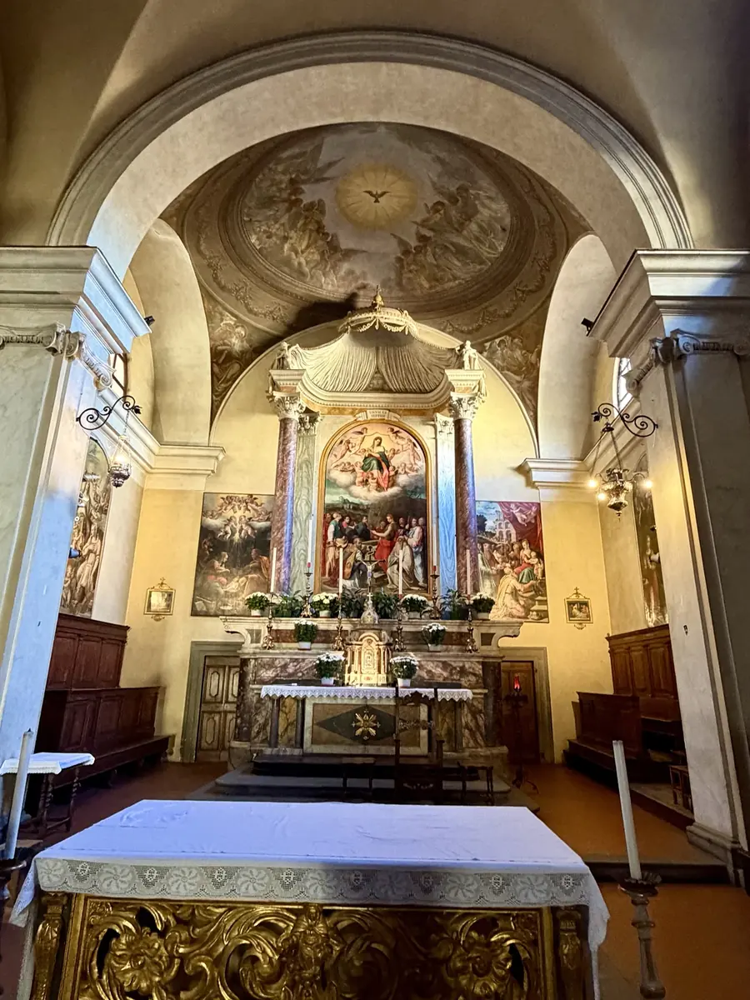
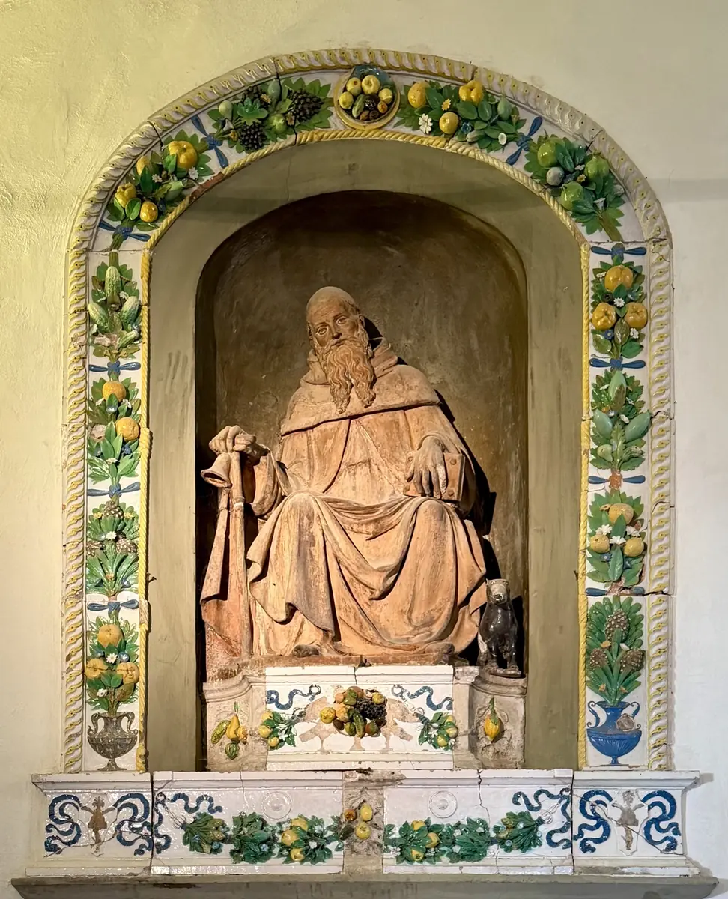
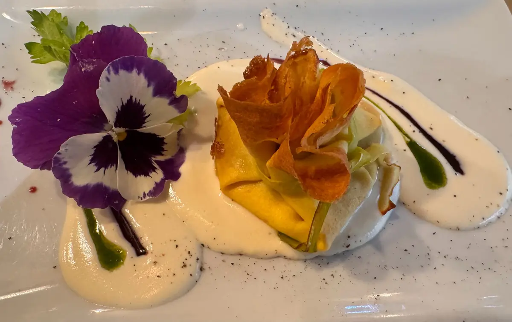
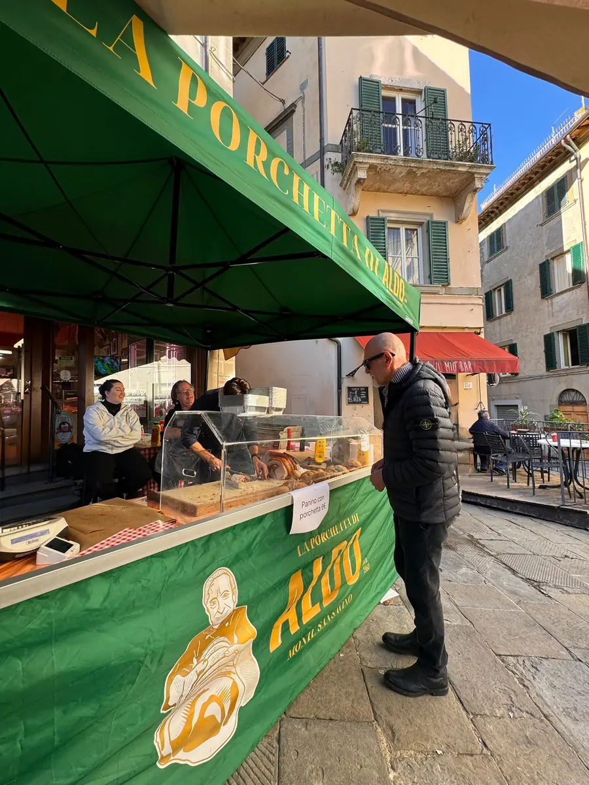
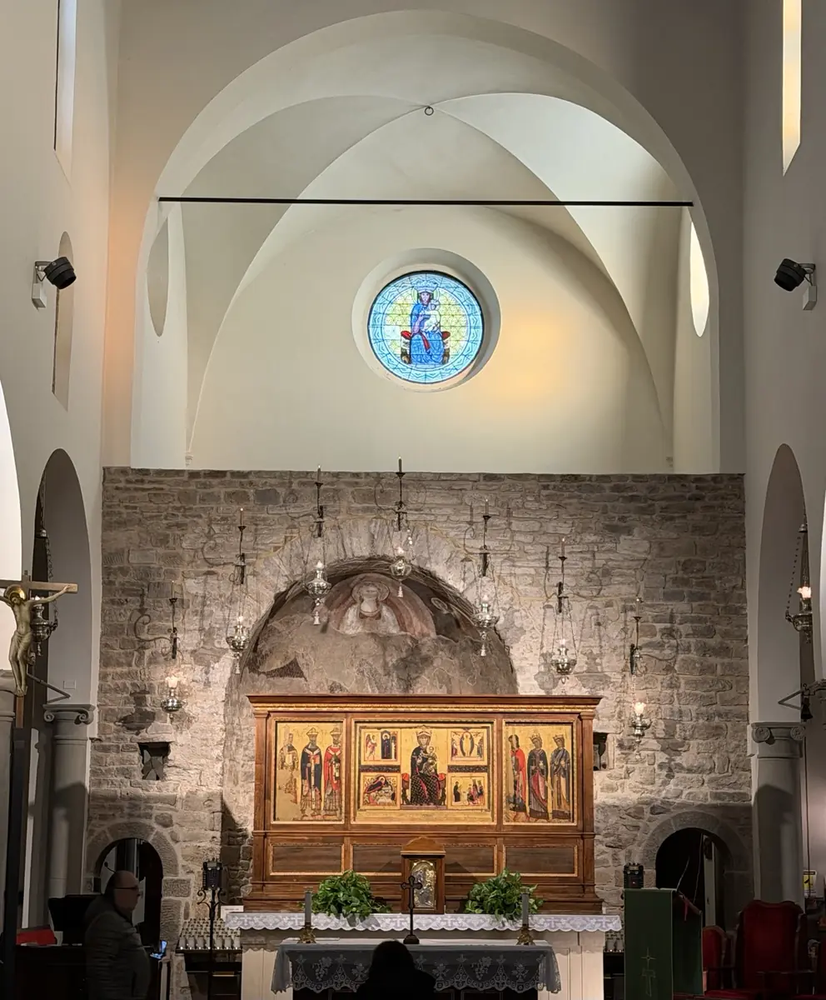
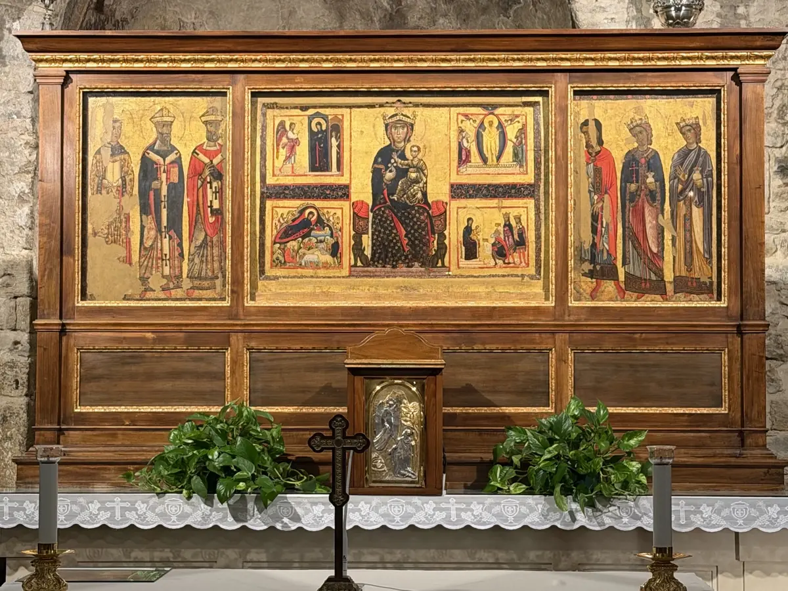
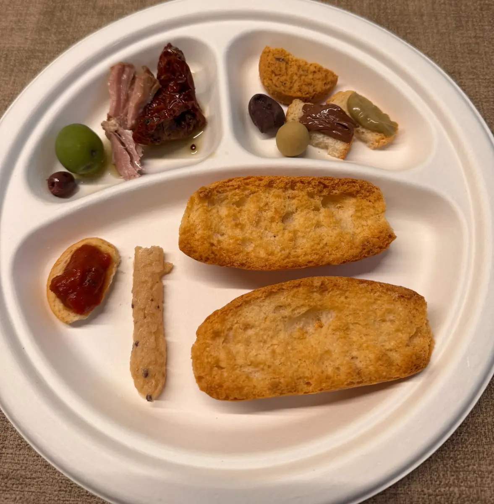

Appena trentacinque minuti di macchina da casa nostra, eppure a Monte San Savino non eravamo mai stati. Sabato abbiamo finalmente rimediato. E la nostra prima scoperta era proprio sotto i Giardini Pensili, dove ho imboccato con il Triride la passerella del Cisternone. Da lì, tra gli archi che si riflettevano nell’acqua, è cominciata la nostra passeggiata in questo borgo della Valdichiana aretina.
Tornati alla luce, ci aspettavano le Logge dei Mercanti, le chiese del centro e, per pranzo, la ciccia di Aldo. Poi siamo passati a comprare un po’ di porchetta, e anche lì la giornata ci ha riservato una sorpresa. Nel pomeriggio, una sosta al Santuario delle Vertighe e un ultimo assaggio da SuprEvo, dove l’olio è arrivato in tavola perfino nel dolce.
Da Porta Cieca al Cisternone
Arrivati a Monte San Savino nella mattinata, abbiamo lasciato l’auto in viale XXIV Maggio. Per salire in paese abbiamo scelto Porta Cieca. Dove un tempo si apriva una porta nelle mura, oggi si entra in un edificio recuperato e si può prendere l’ascensore fino a piazza San Francesco.
Accessibilità · Porta Cieca
Per salire ho dovuto sganciare il Triride dalla carrozzina perché la cabina dell’ascensore è piccola.



È la piazza del Cisternone, e vale la pena fermarsi prima di proseguire.

Accessibilità · Cisternone
Dalla passerella metallica sono riuscita a vedere bene com’è fatto.

Sotto il giardino si aprono due lunghe navate in pietra e mattoni, con volte a botte e quattro grandi archi che le mettono in comunicazione. A guardarlo sembra quasi un palazzo sotterraneo. Nel Cinquecento Nanni di Baccio Bigio progettò questo spazio per raccogliere l’acqua piovana destinata agli abitanti. Oggi quell’acqua serve ancora ad annaffiare il giardino soprastante.

Accessibilità · Centro storico
Un tratto a cui prestare attenzione è la salita da piazza San Francesco verso il centro. L’ascensore ci ha evitato la scalinata, ma una volta uscita in piazza, per affrontare quel tratto ho avuto bisogno dell’aiuto del mio accompagnatore anche con il Triride agganciato. Nel resto della passeggiata, con il Triride non ho più avuto bisogno di assistenza. Si tratta tuttavia di un’esperienza legata al dispositivo utilizzato: la possibilità di affrontare le pendenze in autonomia deve essere valutata in relazione alla potenza del motore e alle caratteristiche del sistema di propulsione della carrozzina, oltre che alla pendenza e alle condizioni del percorso.
Su corso Sangallo, tra le Logge e Palazzo di Monte
Raggiunto corso Sangallo, ci siamo trovati tra due edifici che si guardano da un lato all’altro della strada. Da una parte ci sono le Logge dei Mercanti. Il porticato cinquecentesco, opera dello stesso architetto del Cisternone, si apre su tre lati. Sotto le sue arcate si incontravano i mercanti e si svolgevano gli scambi del paese.

Dall’altra parte c’è la facciata in pietra serena di Palazzo di Monte, oggi sede del Comune.

Fu il cardinale Antonio Di Monte a volere il palazzo nel 1515. Il progetto era di Antonio da Sangallo il Vecchio e al completamento lavorò anche Nanni di Baccio Bigio.
Accessibilità · Palazzo di Monte e Giardini Pensili
Per me la visita si è fermata alla facciata. All’ingresso c’erano diversi scalini e non abbiamo trovato un altro passaggio senza gradini. Anche i Giardini Pensili, proprio sopra la cisterna che avevamo appena visitato, li abbiamo potuti vedere soltanto dall’esterno.

Abbiamo proseguito sul corso, passando davanti a Palazzo Pretorio e alla Torre Civica, la parte medievale di questa passeggiata.


Furono i savinesi a far erigere questo obelisco in pietra serena nel 1644. Con la Guglia vollero rendere omaggio a Mattias de’ Medici, fratello del granduca Ferdinando II, che proprio in quell’anno aveva ricevuto in feudo Monte San Savino.
Le chiese di Sant’Agostino e Santa Chiara

Accessibilità · Sant’Agostino
A Sant’Agostino il nostro ingresso è stato un po’ particolare. Per arrivare in chiesa con la carrozzina dovevamo passare dal chiostro, ma il portone aveva una chiusura che non riuscivamo ad aprire. Ci è venuto in aiuto il parroco. Da lì ho potuto proseguire fin dentro la chiesa senza sganciare il Triride.

Sant’Agostino conserva il portale gotico delle sue origini trecentesche, mentre all’interno si ritrovano gli interventi rinascimentali legati ad Andrea Sansovino e gli altari in stucco aggiunti nel Settecento. Il quadro per cui ci siamo fermati è all’altare maggiore. È l’Assunzione della Vergine tra i santi Agostino e Romualdo, dipinta da Giorgio Vasari nel 1539. La composizione mette in relazione la terra e il cielo: in alto la Vergine viene assunta nella gloria celeste, mentre in basso gli apostoli sono raccolti attorno al sepolcro, insieme ai santi Agostino e Romualdo. Il contrasto tra la scena terrena e l’ascesa di Maria guida lo sguardo verso la parte superiore del dipinto.

Accessibilità · Santa Chiara
A Santa Chiara, in piazza Gamurrini, la difficoltà era un gradino sulla soglia. Con una mano per superarlo sono riuscita a entrare.
La chiesa seicentesca faceva parte del monastero delle clarisse e custodisce quattro terrecotte più antiche dell’edificio. Due sono di tradizione robbiana, Sant’Antonio Abate e l’Adorazione dei Pastori. Le altre due sono pale di Andrea Sansovino e raffigurano San Lorenzo tra San Sebastiano e San Rocco e la Madonna con Bambino e santi.
La Madonna con Bambino e santi presenta Maria in alto, con Gesù sulle ginocchia, circondata da piccoli angeli. Sotto di lei si raccolgono le sante Agata e Lucia e i santi Benedetto e Romualdo, mentre due angeli sostengono una corona sopra il suo capo. Le figure bianche risaltano sul fondo azzurro, racchiuse da una cornice di foglie e frutti colorati.

Nell’Adorazione dei Pastori la scena è più vivace e ricca di colori: Maria e Giuseppe si chinano verso il Bambino, adagiato nella mangiatoia, affiancati dai pastori. In alto gli angeli reggono il cartiglio con il Gloria in excelsis Deo, mentre sullo sfondo un angelo annuncia la nascita ad altri pastori.

Sant’Antonio Abate è raffigurato seduto, con la lunga barba, il bastone e un libro. Ai suoi piedi compare il piccolo maiale, suo tradizionale attributo. Il colore caldo della figura contrasta con la cornice invetriata, decorata da frutta, fiori e foglie.

Nella pala di San Lorenzo tra San Sebastiano e San Rocco prevalgono invece i toni naturali della terracotta. Al centro Lorenzo è riconoscibile dalla graticola del martirio; ai lati si trovano Sebastiano e Rocco, quest’ultimo in abito da pellegrino. Le tre figure occupano nicchie a conchiglia, sormontate da due angeli con una corona; piccoli rilievi narrativi completano la base.

A pranzo da Qui Ciccia, poi un incontro a sorpresa
Per pranzo ci siamo fermati da Qui Ciccia, il ristorante di Aldo Iacomoni. La sua cucina è quella toscana, con la carne alla brace in primo piano.
La ciccia di Aldo ci è piaciuta davvero. Carne di qualità, tenera, saporita e ben cucinata. Ognuno di noi ha scelto la cottura che preferiva. Per noi, il pezzo forte del pranzo.


Conoscevamo anche l’altra sua attività, Le Delizie di Aldo, ma per sederci a tavola la scelta più comoda era questa.
Accessibilità · Qui Ciccia
Il ristorante è disposto su due piani. Se usi la carrozzina, segnalalo al momento della prenotazione e chiedi un tavolo nella sala accessibile. Sono arrivata al mio posto in carrozzina senza difficoltà. C’è però un dettaglio importante per chi organizza la giornata: il bagno del ristorante si trova al secondo piano e non è accessibile in carrozzina.
Dopo pranzo siamo passati da Le Delizie di Aldo, in piazza Francesco Gamurrini, per comprare la porchetta.

E chi abbiamo trovato? Aldo in persona! Ci siamo fermati a fare due chiacchiere e a scattare una foto insieme.

Nel 1960, appena tornato dal servizio militare, aveva rilevato l’attività del porchettaio del paese. Aveva diciannove anni. Da allora ha continuato a lavorare con la moglie Giorgina e la famiglia.
Aglio, finocchio selvatico e circa otto ore nel forno a legna: così si prepara la sua porchetta.

Nel 2010 ne ha realizzata una lunga ben 44,93 metri, entrata nel Guinness dei primati. Nel 2016 è stato riconosciuto Maestro d’Arte e Mestiere. Noi lo ricorderemo soprattutto così: un uomo d’altri tempi, cordiale e alla mano, disponibile a fermarsi con chi era passato semplicemente a comprare un po’ di porchetta. Nei suoi modi c’è la semplicità di chi ha dedicato una vita al proprio mestiere e conserva il piacere di incontrare le persone e scambiare due parole. Un incontro breve, ma di quelli che lasciano un bel ricordo e aggiungono alla visita il calore di un’accoglienza sincera.
Nel pomeriggio al Santuario di Santa Maria delle Vertighe
Intorno alle 15.30 abbiamo raggiunto il santuario, a pochi chilometri dal borgo.

Accessibilità · Santuario delle Vertighe
Dopo le salite della mattina, qui mi sono mossa con facilità. Dal posto auto riservato abbiamo raggiunto la rampa d’ingresso e ho potuto percorrere in carrozzina sia gli spazi esterni sia l’interno della chiesa.
Alle Vertighe esisteva una chiesa già nel 1073. L’edificio a tre navate che abbiamo visitato risale al 1503 e racchiude ancora l’antica cappella. Una leggenda racconta che, dopo una lite fra due fratelli per un terreno, la cappella sarebbe stata trasportata miracolosamente da Asciano fin su questo colle.

Due immagini raccontano la devozione alla Madonna in epoche diverse.

La più difficile da leggere è sulla volta della cappella, dove si sovrappongono tre strati di pitture e si distingue ancora parte di un’Assunzione.
Sull’altare maggiore si vede invece la tavola duecentesca di Margarito e Ristoro d’Arezzo. Al centro Maria siede in trono con il Bambino. Ai lati, in quattro scene, si susseguono l’Annunciazione, la Natività, l’Adorazione dei Magi e l’Assunzione.


Una curiosità sul santuario. Nel 1964 papa Paolo VI proclamò la Madonna delle Vertighe patrona dell’Autostrada del Sole.
Da SuprEvo, una degustazione guidata tra i profumi e i sapori dell’extravergine
Per l’ultima tappa siamo andati in via XXV Aprile 119, da SuprEvo – Museo dell’Olio Morettini. Qui si trovano museo, frantoio e negozio. Il percorso museale propone dieci tappe, dagli attrezzi di una volta alle esperienze sensoriali. Per questa gita abbiamo scelto la degustazione guidata, che va prenotata, dura un’ora e costa 10 € a persona. Il biglietto per il museo interattivo costa 10 €.
Prima è arrivata la spiegazione su come si assaggia l’extravergine. Abbiamo cominciato dal profumo, poi siamo passati al gusto, prestando attenzione anche all’amaro e al piccante. Con più oli da confrontare si capiva meglio che cosa cercare nell’assaggio successivo.

Abbiamo poi assaggiato gli oli sui granetti, seguiti dalle specialità salate e dolci preparate con gli oli di casa. L’assaggio più curioso per noi è stato quello dolce, proprio perché fino a poco prima avevamo gustato lo stesso ingrediente sui granetti.

Prima di ripartire abbiamo fatto un giro nel negozio, dove si possono ritrovare gli oli e le specialità della degustazione.
Accessibilità · SuprEvo
Per le persone con disabilità l’ingresso al museo è gratuito. Qui ho anche utilizzato il bagno accessibile.
Gli oli ci sono piaciuti per la loro qualità e la degustazione è stata una bellissima esperienza. Torneremo senz’altro a visitare il museo interattivo.
Il mio «senza sorprese»
Le informazioni da ricordare, raccolte qui per ritrovarle facilmente.
| Voce | Voto |
|---|---|
| Ascensore di Porta Cieca | 4 su 5 |
| Percorso nel centro storico | 3 su 5 |
| Sant’Agostino e Santa Chiara | 3 su 5 |
| Qui Ciccia · sala accessibile, bagno al secondo piano | 3 su 5 |
| Santuario delle Vertighe | 5 su 5 |
| SuprEvo · degustazione e bagno | 5 su 5 |
| La cucina toscana c/o Qui Ciccia | 5 su 5 |
| La porchetta c/o Le Delizie di Aldo | 5 su 5 |
| Oli e specialità c/o SuprEvo | 5 su 5 |
Cose da ricordare
- Per salire in paese abbiamo usato l’ascensore di Porta Cieca da viale XXIV Maggio. Per entrare nella piccola cabina ho dovuto sganciare il Triride. Dall’uscita in piazza San Francesco verso il centro la salita ha richiesto l’aiuto del mio accompagnatore anche con il Triride. Nel resto della passeggiata, con il Triride ho proseguito senza ulteriore assistenza. L’autonomia sui tratti in pendenza va comunque valutata in base alla potenza del motore e alle caratteristiche del dispositivo utilizzato, oltre che alle condizioni del percorso.
- Per le visite siamo entrati in carrozzina al Cisternone. A Sant’Agostino è servito aiuto per aprire il chiostro, a Santa Chiara per superare il gradino. Palazzo di Monte e Giardini Pensili li abbiamo visti soltanto dall’esterno.
- Per il pranzo abbiamo preferito la sala accessibile di Qui Ciccia alla bottega Le Delizie di Aldo. Al momento della prenotazione, segnala la carrozzina e chiedi un tavolo nella sala accessibile. Il bagno è al secondo piano e non è accessibile in carrozzina.
- Alle Vertighe abbiamo trovato parcheggio riservato e rampa. Da SuprEvo la degustazione va prenotata. Dura un’ora e costa 10 € a persona. Qui abbiamo trovato anche il bagno accessibile.
I bagni incontrati
- SuprEvo Bagno accessibile, utilizzato personalmente.
- Qui Ciccia Il bagno è al secondo piano e non è accessibile in carrozzina.
Esperienza complessiva
5 cuori su 5Questo racconto descrive la nostra esperienza in carrozzina di sabato 14 novembre 2026. Servizi, accessi e condizioni di sosta possono cambiare: per organizzare la visita controlla le informazioni aggiornate dei luoghi interessati.